로테르담 루프탑 데이즈 — 도시의 옥상을 공공디자인으로 재해석하다 2편
로테르담 루프탑 데이즈: 도시의 옥상을 공공 디자인으로 재해석하다(2편)
로테르담 루프탑 데이즈의 둘째 날은 도시의 심장부에서 과거의 발자취와 미래의 비전을 동시에 탐험하고자 했다. 영어가 아닌 네덜란드어로 투어가 진행되어 이해가 쉽지 않았지만, 건물의 생생한 모습과 함께 투어별 가이드가 준비한 자료들을 통해 비교적 깊이 있게 들여다볼 수 있었다.
라인 항구의 미래를 엿보다: Het Nieuwe Luxor 극장
2일차는 로테르담의 상징적인 건축물 중 하나인 'Het Nieuwe Luxor 극장'에서 시작되는 'Ontdek de Rijnhaven(라인 항구 탐험)' 프로그램으로 시작했다. 홈페이지 설명에 따르면 프로그램은 단순한 극장 투어를 넘어, 라인 항구 지역의 역동적인 도시 개발 현황과 미래 계획을 조망하는 기회를 제공하고자 했다.
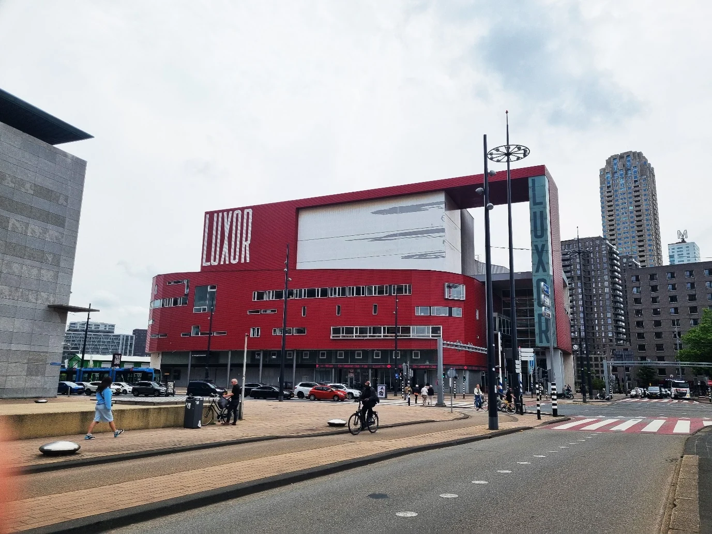
'Het Nieuwe Luxor 극장 전경가이드의 설명에 따르면, 극장 주변은 현재 도시 개발 측면에서 대규모 변화를 앞두고 있었다. 특히 '컨테이너 계단'이라는 흥미로운 임시 구조물은 이곳이 신진 아티스트들에게 개방된 공간으로 활용될 수 있으며, 이는 극장 내부의 전시장과 함께 문화적 잠재력을 보여준다.
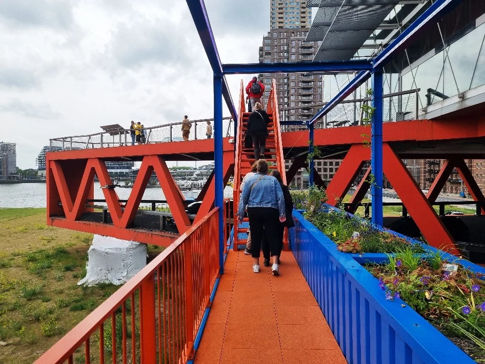
극장과 이어져 있는 컨테이너 계단
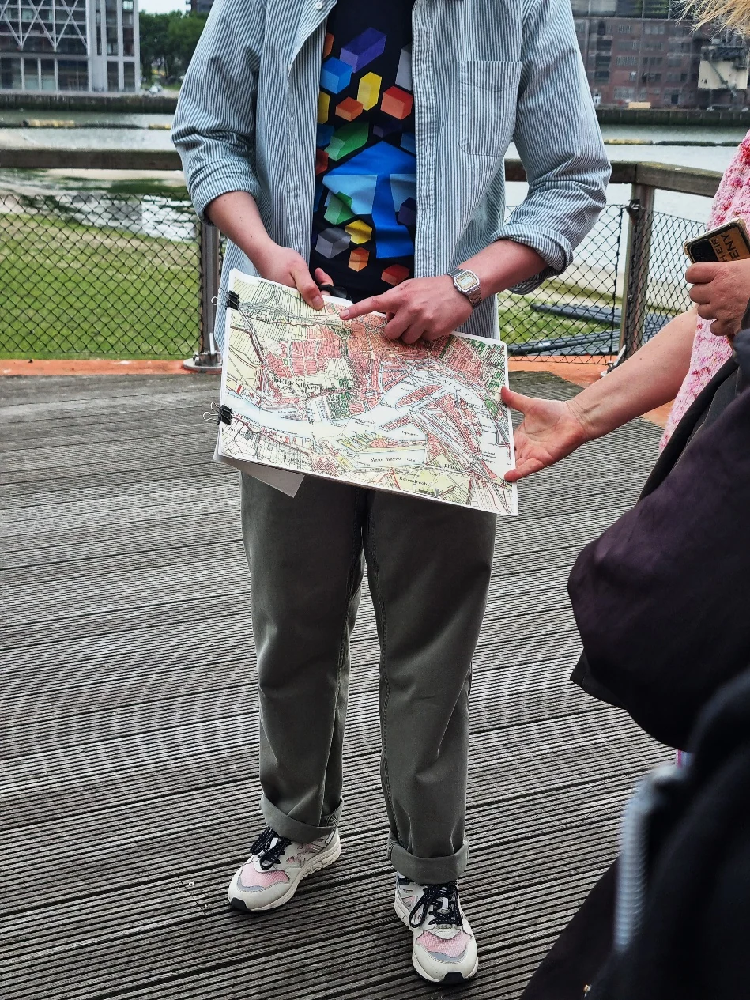
로테르담에서 극장이 위치한 곳에 대한 설명
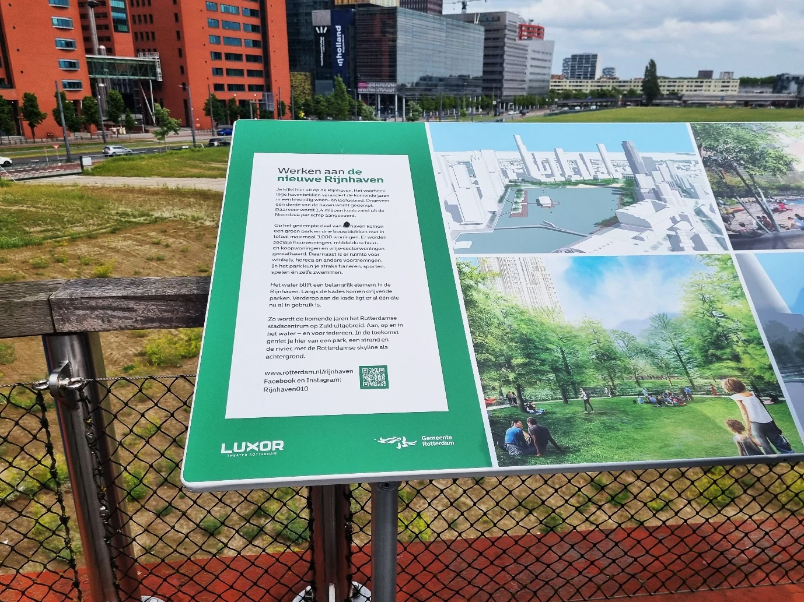
Luxor in beweging
(움직이는 룩소르)
새로운 룩소르 극장 주변 환경은 앞으로 몇 년간 급격하게 변화할 것입니다. 새로운 주상복합 건물들이 들어서고, 라인하벤(Rijnhaven)은 부분적으로 메워져 새로운 도시 공원을 만들 공간이 마련됩니다.
룩소르 극장 로테르담도 이 변화에 함께 움직입니다. 대규모 공연 프로그램 외에도 룩소르는 주변 환경과의 연결을 적극적으로 추구하며, 다양한 도시 주민들을 하나로 모으고 창작자들이 성장할 수 있도록 지원합니다.
이 변화의 특별한 상징 중 하나는 ‘컨테이너
계단(Containertrap)’입니다. 이 시선을 사로잡는 구조물은 새로운 룩소르
극장과 주변 환경을 연결하며, 로테르담의 새로운 도시 중심부가 형성되는
모습을 독특한 전망으로 보여줍니다.
또한 이 계단은 문자 그대로 새로운 프로그램들을 위한 무대를 제공합니다:
MeeMaakPodium, Art Hub, 혁신 플랫폼, 그리고 사람들이 함께 모이는 제3의
공간(derde plek)으로 기능합니다.
또한, 가이드는 극장 바로 뒤편에 보이는 간척지를 중심으로 거대한 공원과 모래사장, 그리고 주택 단지가 들어서고, 이를 극장과 연결하는 새로운 대형 계단이 생겨날 것이라는 미래 계획을 언급했다. 이는 극장이 라인 항구 개발의 핵심적인 연결 고리가 될 것임을 암시하는데, 옥상에서 바라본 라인 항구와 빌헬미나피어, 그리고 새롭게 솟아나는 'De Sax'와 같은 건축물들은 로테르담의 끊임없는 변화와 성장을 나타낸다.
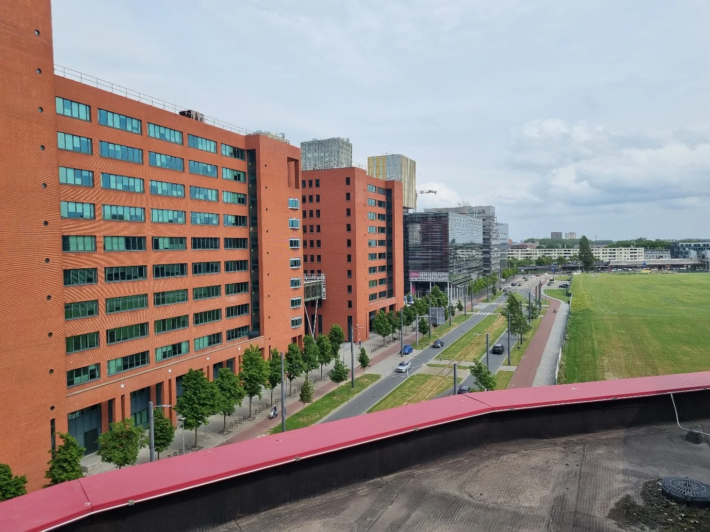
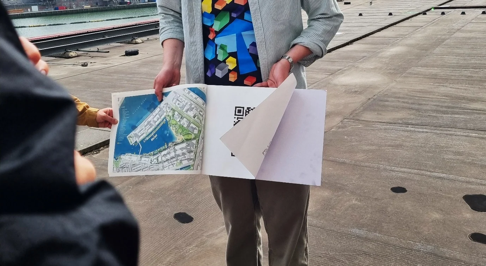
비록 네덜란드어로 진행되어 완벽하게 이해하기는 어려웠지만, 육성으로 녹음된 가이드의 설명을 통해 도시가 지향하는 바를 명확히 느낄 수 있었고, 제공된 QR코드를 통해 3D 시뮬레이션을 보며 미래 도시의 모습을 상상해볼 수 있었던 점도 인상 깊었다.
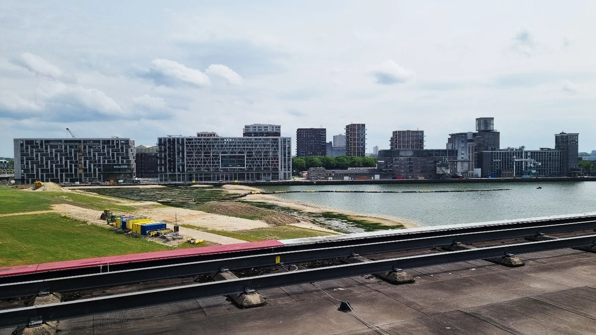
Het Nieuwe Luxor 극장 투어는 공공 공간의 변화가 시민 삶의 질 향상과 도시 정체성 확립에 어떻게 기여하는지를 보여주는 사례다. 특히 임시 구조물을 활용하여 문화적 공간을 창출하고, 유휴 공간의 재해석과 연결성을 통한 도시 기능 확장이라는 공공디자인의 핵심 과제를 담고 있다. 이는 물리적 환경 개선을 넘어, 시민들에게 새로운 경험과 상호작용의 기회를 제공하며 도시 활력을 불어넣는다는 점에서 매우 시의적절하다.
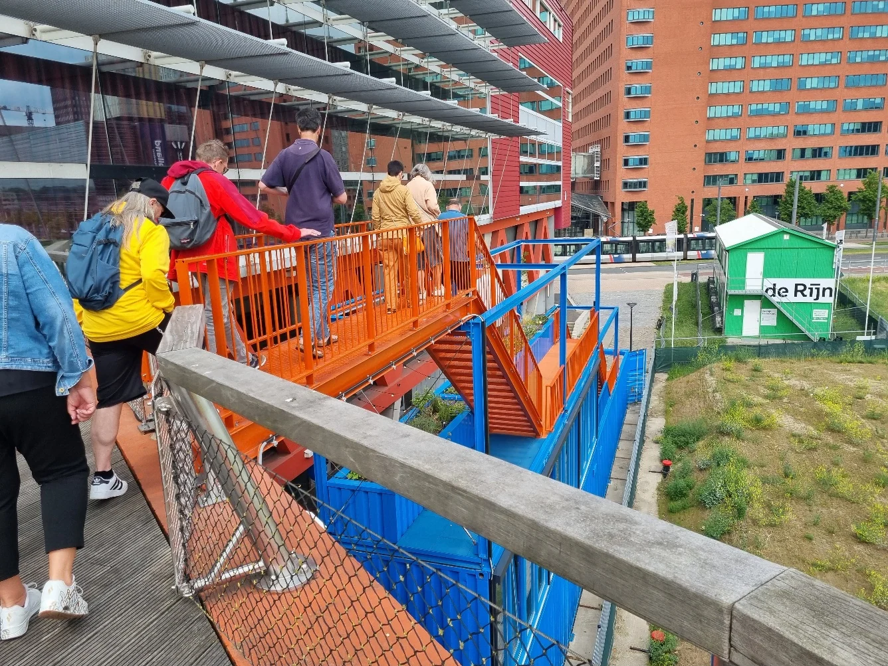
**
재건의 상징, Groot Handelsgebouw 옥상에서 만난 역사
두 번째로 방문한 'Ontdek een Icoon van de Wederopbouw(재건축의 아이콘 탐험)' 프로그램은 로테르담 전후(戰後) 재건축의 핵심이라 할 수 있는 'Groot Handelsgebouw'에서 진행되었다. 건물은 로테르담 중앙역 바로 옆에 위치하여 과거 로테르담의 굳건한 재건 의지를 보여주는 듯했다.
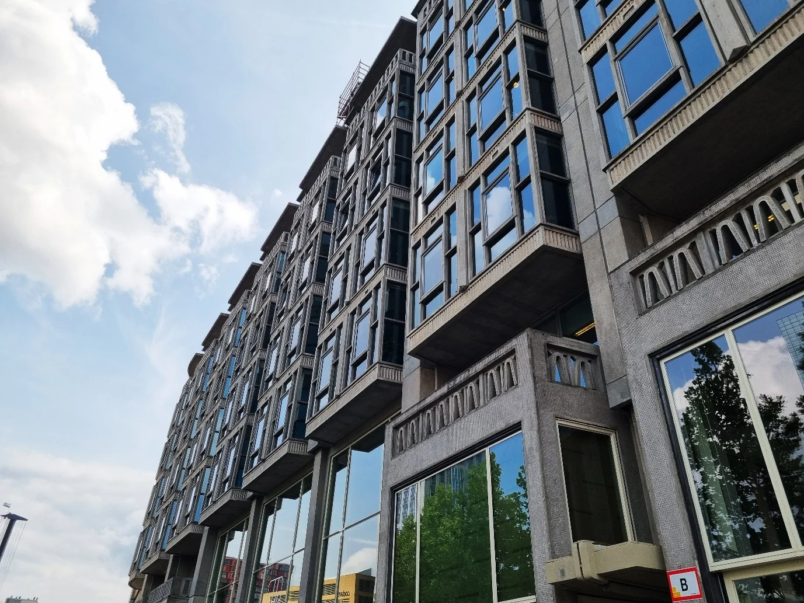
가이드는 건물이 "오래된 건물임에도 잘 설계되어 아직까지도 그 기능을 잃지 않고 있다"고 강조했다. 실제로 1953년 완공된 이후 현재까지도 종합 사무실 건물로서 활발히 사용되고 있으며, 비록 일부 공간은 비어있었지만 그 기능성과 유연성을 잃지 않았다는 설명이었다.
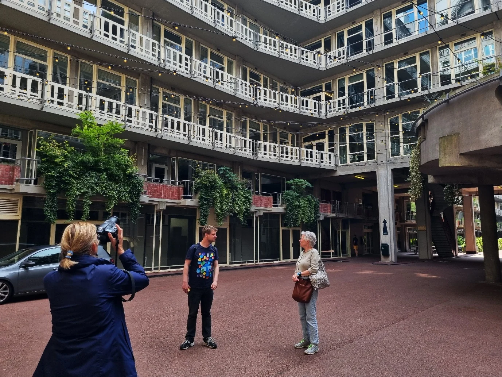
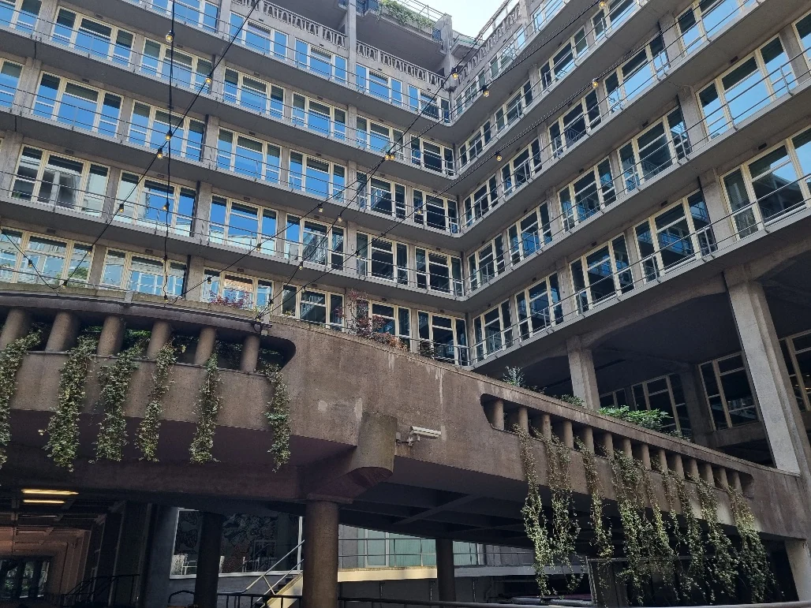
건물 내부에는 세 개의 안뜰이 있었는데, 단순히 진입로였던 공간이 이제는 500종 이상의 다양한 식물들로 가득 찬 아름다운 옥상 정원으로 변모하여, 곤충과 새들의 보금자리이자 건물 직원들의 쾌적한 휴식 공간으로 자리매김하고 있었다. 올해부터 여름철에는 일반 대중에게도 개방되어, 시민들이 도시의 역사적인 옥상을 자유롭게 경험할 수 있게 된 점도 주목할 만했다
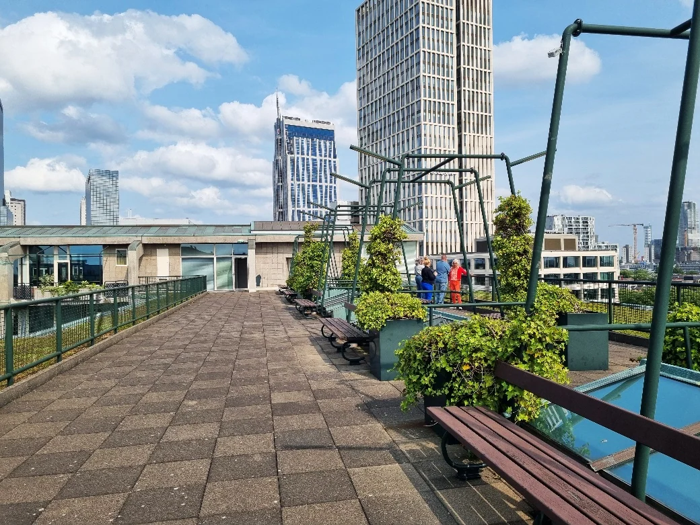
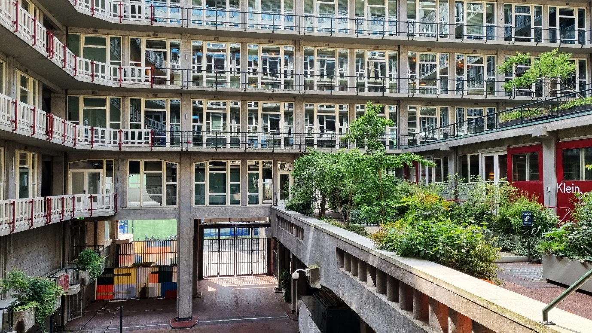
건물의 건축가 마스칸트(Maaskant)는 미국 유학 중 얻은 영감으로 지게차의 중요성을 깨닫고, 모든 통로를 지게차가 자유롭게 이동하고 회전할 수 있도록 넓게 설계했다고 한다. 이는 당시로서는 혁신적인 발상이었고, 1950년대와 60년대에 동력 운송 수단이 보편화되기 시작한 시기와 맞물려 시대를 앞서간 설계로 평가받았다. 또한, 건물 전체를 콘크리트 골조로 지어 내부 벽을 자유롭게 변경할 수 있게 한 점, 그리고 외벽의 '꺾임' 디자인과 반복적인 패턴이 건물의 논리적이고 조화로운 외관을 만들어낸다.
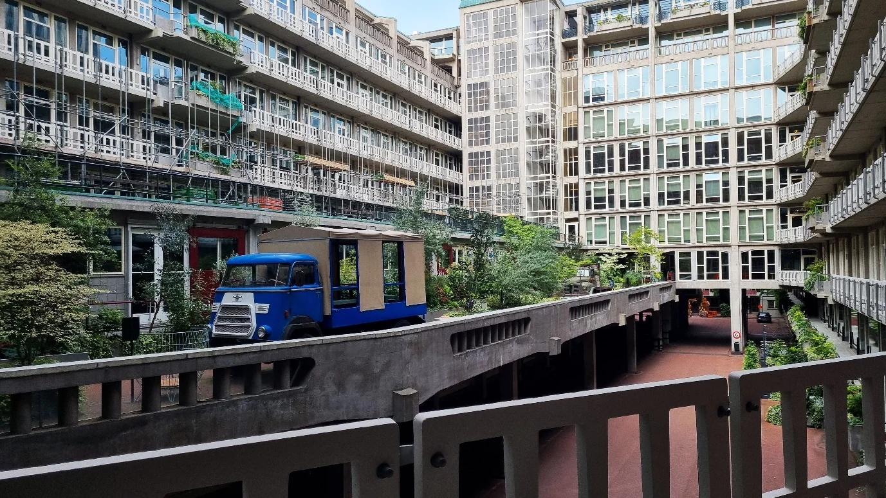
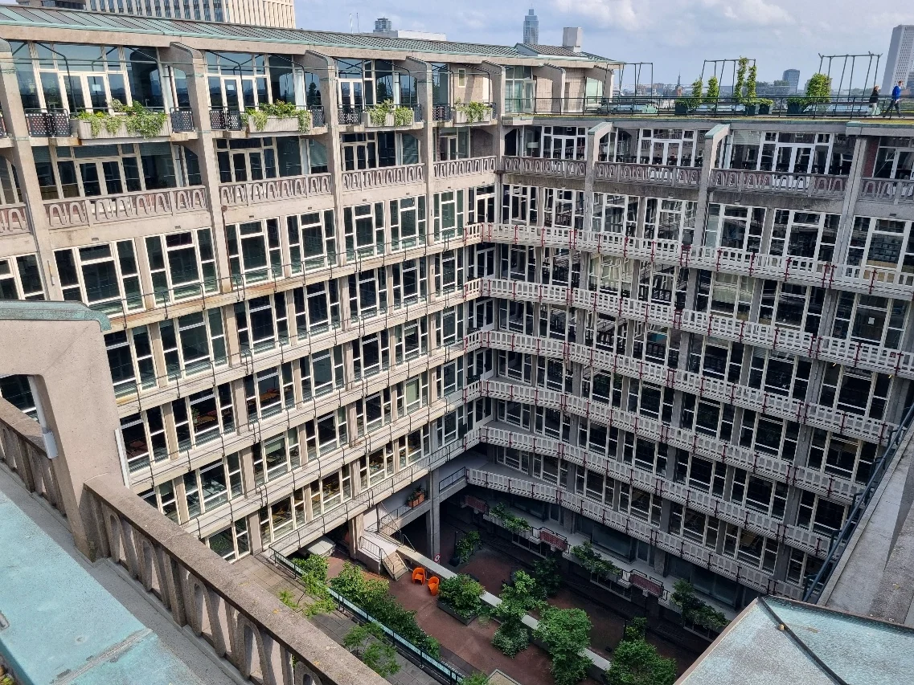
옥상에서 내려다본 로테르담 중앙역과 스카이라인은 과거의 재건축 아이콘이 현대 도시와 어떻게 조화를 이루며 존재하는지를 생생하게 보여주었다.
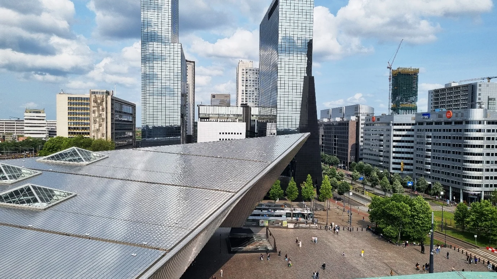
Groot Handelsgebouw는 지속 가능한 도시 재생과 기존 건축물의 재탄생이라는 중요한 방향을 제시한다. 전쟁 후 재건된 건물이 70여 년이 지난 지금도 본래의 기능을 유지하며 도시의 중심 역할을 한다는 점은 '건축적 수명 연장'과 '시간의 흐름에 따른 유연한 공간 변화'의 가치를 나타낸다. 특히, 과거의 화물 도로가 '녹색 옥상 정원'으로 탈바꿈하여 공공에게 개방된 휴식 공간이 된 것은 도시 녹지 공간 확보와 시민 접근성이라는 현대 공공디자인의 당면 과제를 해결하는 모범 사례다. 지게차를 고려한 기능적인 설계가 오늘날에는 다양한 용도로 활용되는 유연한 공간으로 이어졌다는 점은 미래를 예측하고 사용자의 편의를 고려한 디자인이 시대를 초월하여 지속 가능한 가치를 창출함을 시사한다.
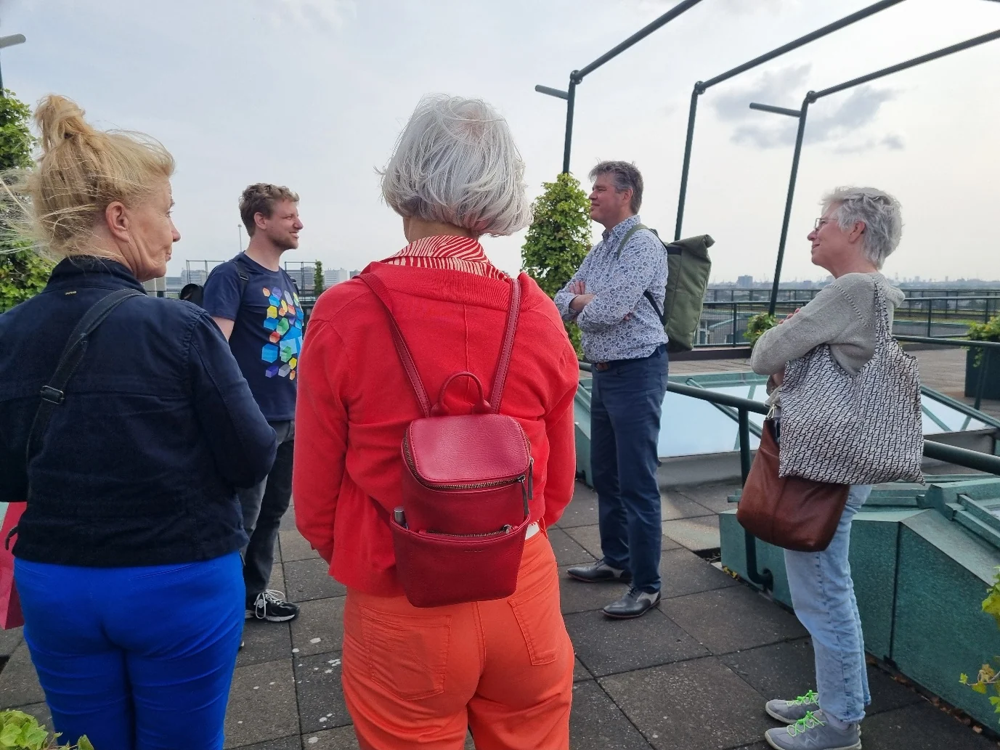
네덜란드어라는 언어적 장벽에도 불구하고, Het Nieuwe Luxor 극장과 Groot Handelsgebouw 옥상에서 마주한 로테르담의 현재와 미래는 도시가 끊임없이 진화하며 새로운 가치를 창출하는 모습을 제시했다. 두 행사 모두 도시의 옥상을 통해 건축, 역사, 공공 공간의 변화, 그리고 미래의 비전을 연결하는 특별한 경험을 선사하며 로테르담 루프탑 데이즈의 의미를 더했다.
이 글의 판본과 수록 정보 ＋
집필 폴더의 자료; 실제 작성자·집필 기여 미확정
원고·초안의 표현을 보존해 수록한 온라인 편집본입니다.
- 수록 자료
- 로테르담 루프탑 데이즈_도시의 옥상을 공공 디자인으로 재해석하다(2편).docx
- 자료의 날짜 단서
- 기록 없음 · 실제 발표일과 다를 수 있습니다.
- 관련 파일
- 1개 / 서로 다른 본문 1종